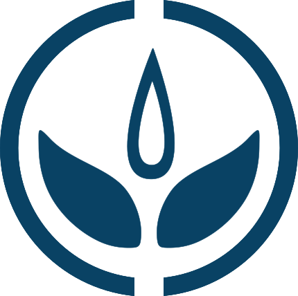

BASTA YA
Minería Metalífera a Cielo Abierto y de Radiactivos
La Megaminería produce enfermedades como el cáncer, malformaciones, abortos. Suelos, agua, aire y toda forma de vida, contaminados. La Megaminería alimenta la especulación financiera, los bienes suntuarios y el consumismo desmedido.
LOS GLACIARES NO SE TOCAN
Campaña Nacional: "Los Glaciares ¡NO SE TOCAN!"
La Megaminería destruye al igual que otras industrias nuestras fuentes de agua dulce y reguladoras del recurso hídrico que son los Glaciares y el ambiente peri-glacial.

NO NUCLEAR
Si Energías Renovables
Las Centrales Nucleares contaminan silenciosamente. La radiación es carcinogénica, mutagénica y mata. El uranio (minería es corporativismo), su combustible y elementos resultantes como el plutonio, perduran contaminándolo todo durante 250 siglos.
NO TRANSGÉNICOS
No Agrotóxicos
El modelo Agro-Industrial lejos de solucionar el hambre en el mundo, la sostiene. Las Megacorporaciones como Monsanto, se complotan con los gobiernos de turno y los poderes políticos.
